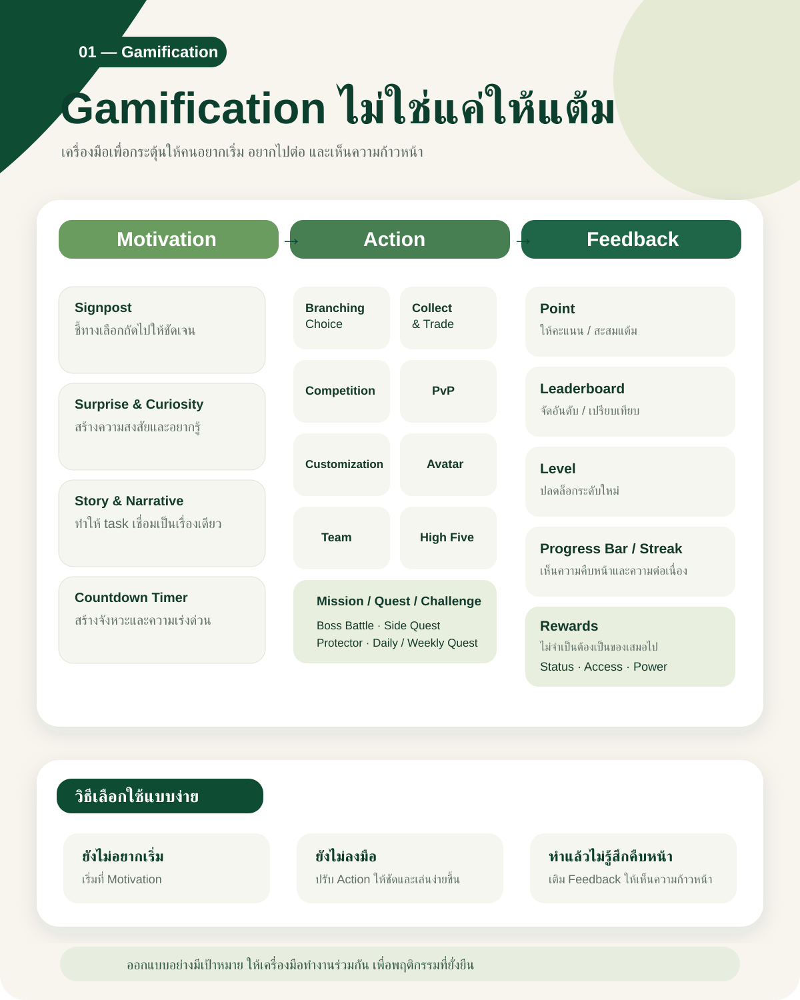
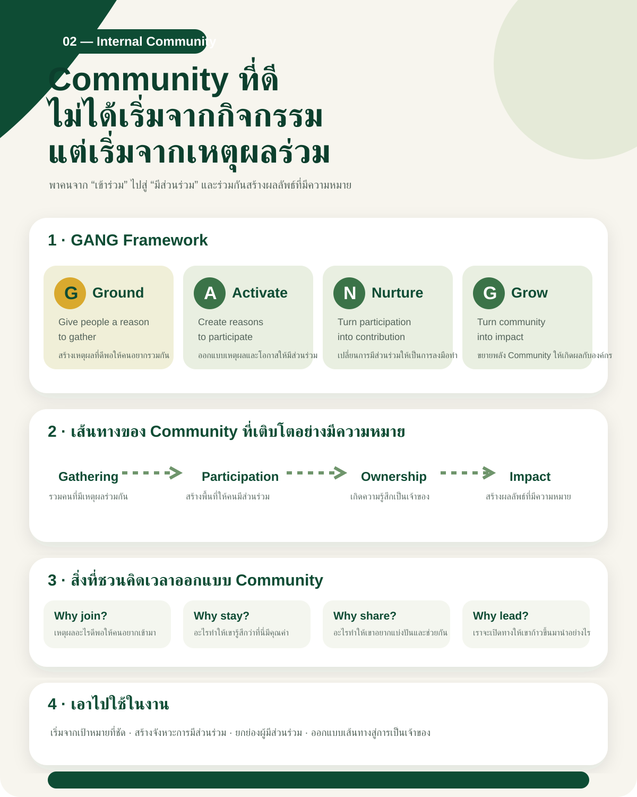
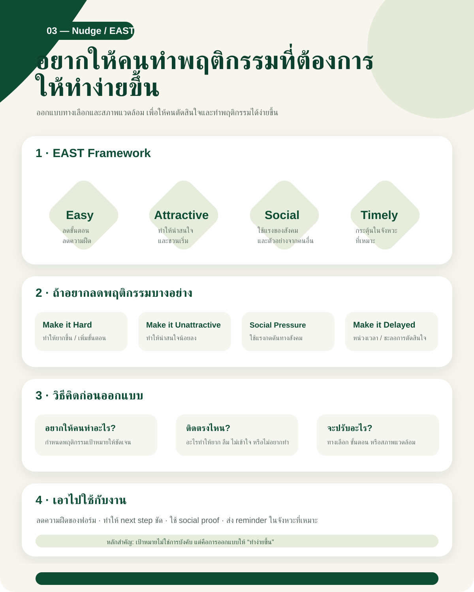
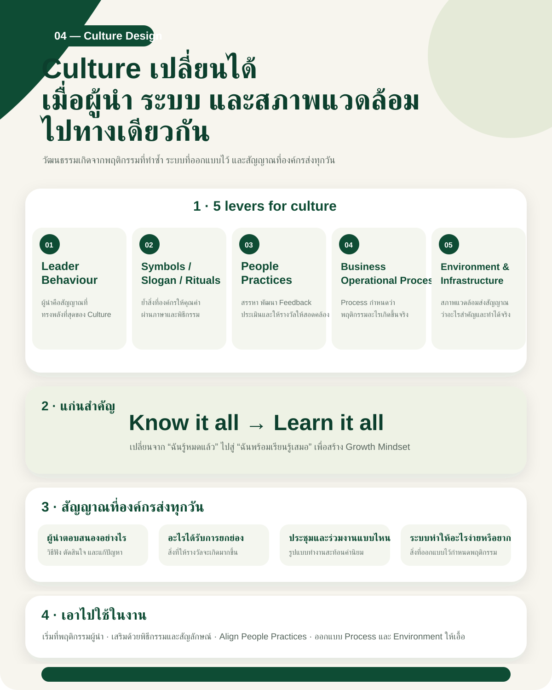

เรื่องเด่น · งานคนและ AI
ออกแบบองค์กรและพัฒนาคนด้วย AI
ตามทีมขายสมมติจากโจทย์ว่าจะเพิ่มคนไหม ไปจนถึงวันที่รู้ว่าทักษะใหม่ช่วยให้งานดีขึ้นจริงหรือเปล่า
อ่านเรื่องเด่นบันทึกจากห้องเรียนและงานจริง
อ่านเรื่องงานคน การทำงานกับ AI และพฤติกรรมในองค์กร แล้วเลือกหนึ่งไอเดียไปลองกับทีม
เรื่องเด่น · งานคนและ AI
ตามทีมขายสมมติจากโจทย์ว่าจะเพิ่มคนไหม ไปจนถึงวันที่รู้ว่าทักษะใหม่ช่วยให้งานดีขึ้นจริงหรือเปล่า
อ่านเรื่องเด่นงานคนและ AI · 6 ตอน
วางแผนกำลังคน พัฒนาทักษะ และออกแบบ AI ให้มีคนรับผิดชอบ
เปิดเรื่อง ↗
ออกแบบพฤติกรรม · Gamification
เลือกกลไกที่ช่วยให้คนลงมือและเห็นความคืบหน้า
เปิดเรื่อง ↗
ออกแบบพฤติกรรม · Community
ชวนคนถาม ลอง แชร์ และนำความรู้ไปใช้ต่อ
เปิดเรื่อง ↗
ออกแบบพฤติกรรม · Nudge
ดูวิธีลดความฝืดด้วยแนวคิด EAST
เปิดเรื่อง ↗
ออกแบบพฤติกรรม · Culture
เชื่อมพฤติกรรมผู้นำ ระบบคน และกระบวนการ
เปิดเรื่อง ↗